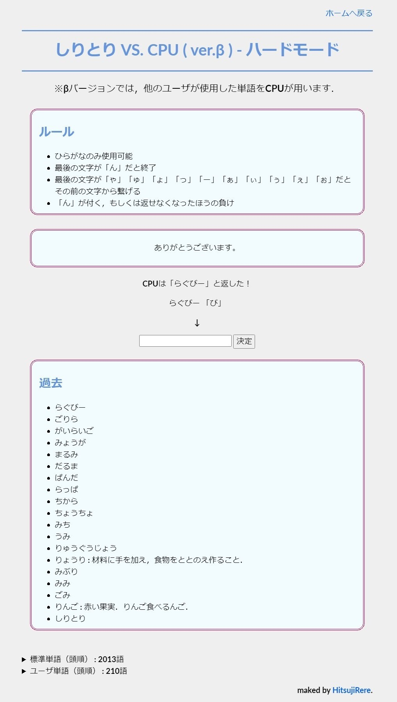
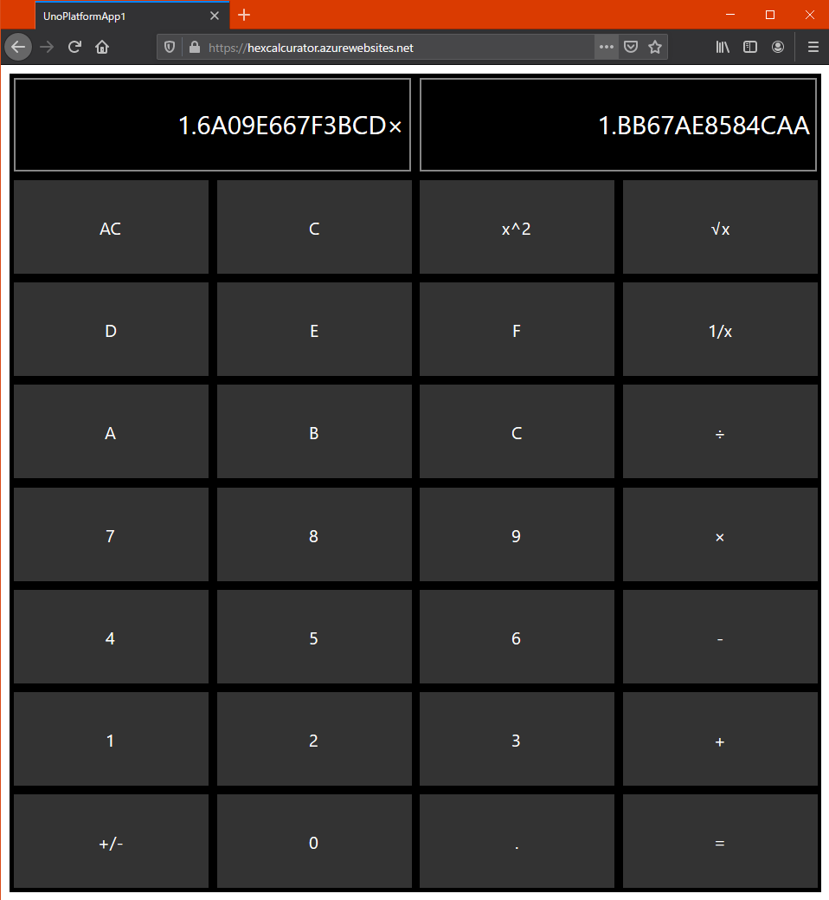

Profile
- Name: Hitsuji Rere
- Twitter: @HitsujiRere
- GitHub: @HitsujiRere
-
AtCoder
- User: @Deji
- Highest Rating: 1234
-
PAST Third
- Grade: Intermediate
- Score: 76
Products
-
Siritori
By using this, you can challenge how long you can keep playing Shiritori, or you can battle the CPU.
Made with JavaScript.
 -
Hex Calcurator
This is a hexadecimal function calculator.
Made with Uno-Platform and C#.
https://hexcalcurator.azurewebsites.net (Stopping Now)
 -
Just 10 Game
It's a game to make 10.
Made with C++ and C++ Library Open-Siv-3D.
https://scrapbox.io/hitsujirere-projects/Just10Game
Just10Game Ver 1.0.0です！！！#Just10Game#OpenSiv3D pic.twitter.com/AnHVxYuKbB
— れれ (@HitsujiRere) March 28, 2020 -
Yudetamago 2
It's a click action game.
Made with C++ and C++ Library Open-Siv-3D.
(Yudetamago 1 was made with Processing-3.)
https://scrapbox.io/hitsujirere-projects/ゆでたまご２